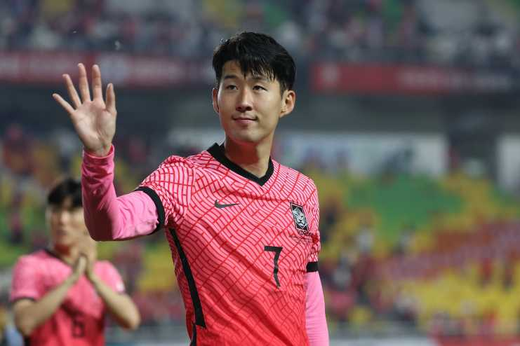

손흥민(孫興慜, 1992년 7월 8일 ~)은 대한민국의 축구 선수이다. 현재 잉글랜드 프리미어리그 토트넘 홋스퍼에서 윙어로 활약하고 있으며 대한민국 축구 국가대표팀의 주장으로도 활약하고 있다. 아시아 선수로서는 역대 최초로 프리미어리그 공식 베스트 일레븐에 선정됐고, 프리미어리그 득점왕을 수상했다. 또한, FIFA 푸스카스상을 대한민국 선수 최초로 수상하였으며[5][6][7][8][9][10] 2022년에는 축구 선수로는 최초로 대한민국 체육훈장 청룡장을 수상하였다.
 1992년 7월 8일 손흥민은 강원도 춘천시 후평동에서 아버지 손웅정과 어머니 길은자의 차남으로 태어나 그곳에서 자랐다. 춘천 부안초등학교를 졸업했고, 춘천 후평중학교에 입학한 후 2학년때 원주 육민관중학교 축구부에 들어가기 위해 전학하여 졸업하였으며, 2008년 당시 FC 서울의 U-18팀이었던 동북고등학교 축구부에서 선수 활동 중 대한축구협회 우수선수 해외유학 프로젝트에 선발되어 2008년 8월 독일 분데스리가의 함부르크 유소년팀에 입단하였다.[12][13] 함부르크 유스팀 주전 공격수로 2008년 6월 네덜란드에서 열린 4개국 경기에서 4게임에 출전, 3골을 터뜨렸다. 1년 간의 유학 후 2009년 8월 한국으로 돌아온 후 10월에 개막한 FIFA U-17 월드컵에 출전하여 3골을 터트리며 한국을 8강으로 이끌었다. 그해 11월 함부르크의 정식 유소년팀 선수 계약을 체결하였으며 독일 U-19 리그 4경기 2골을 넣고 2군 리그에 출전을 시작했다.